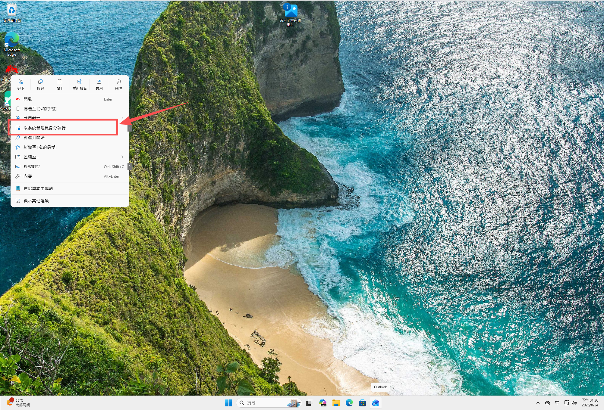
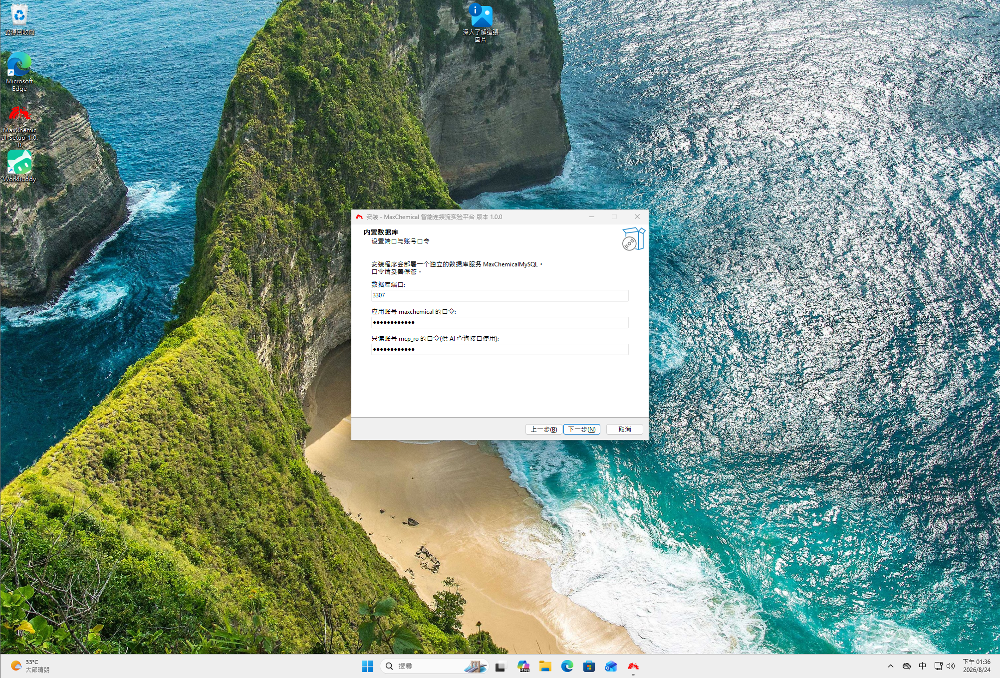
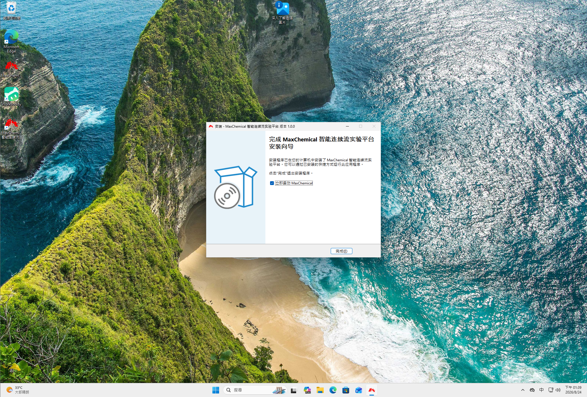
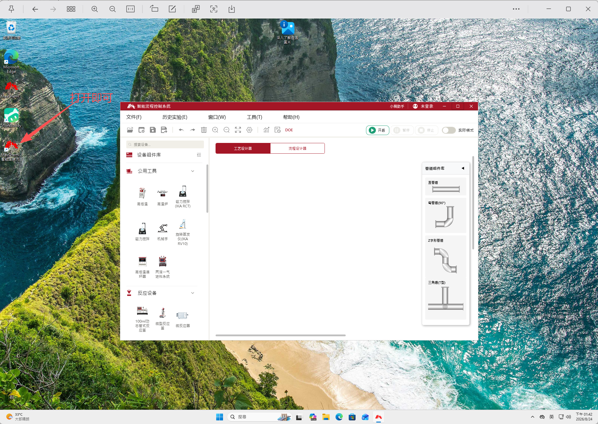
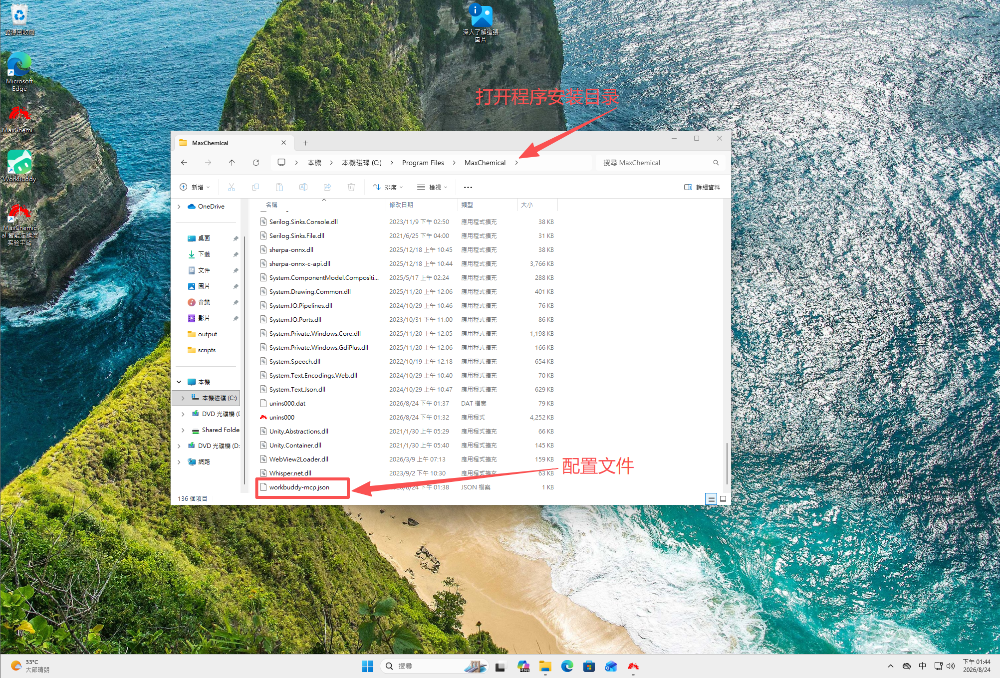
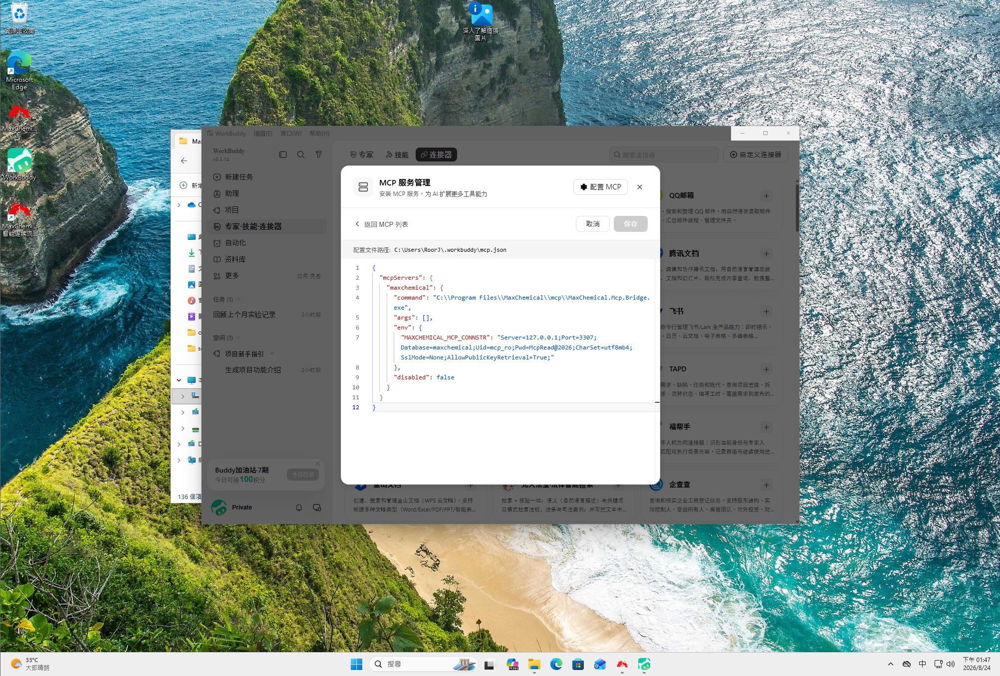
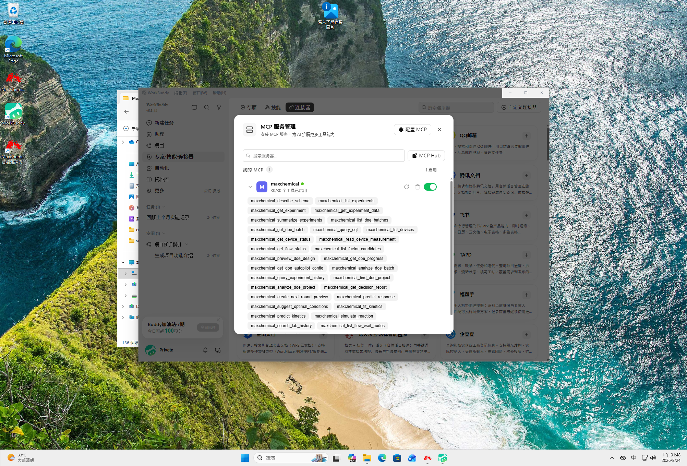

MAXCHEMICAL
安装指南 · 打印时勾上「背景图形」，关掉「页眉和页脚」
HTLAB 上海霍桐实验仪器
MaxChemical
安装指南
八个步骤，约五分钟
软件版本 v1.0.0
2026 年 8 月
开始之前
需要准备什么
安装包里已经带好了软件运行需要的一切，这台电脑不需要提前装任何东西，
也不需要连网。开始前只要确认两件事。
- 这台电脑用的是 Windows 10 或 Windows 11，64 位
- 你现在登录的是管理员账户
系统版本太旧的话，安装程序会直接告诉你。
它在第一步就会检查，不会让你装到一半才发现问题。
如果弹出提示说版本太低，把系统升级到 Windows 10 22H2 即可，升级是免费的。
整个过程大约二十分钟。
其中十分钟左右是电脑自己在装，你不需要守着。
第一步01
用管理员身份打开安装程序
在安装包 MaxChemical-Setup-1.0.0.exe 上点右键，
选择「以管理员身份运行」。
接着电脑会弹出一个确认窗口，问你是否允许此应用对设备进行更改，点「是」。

右键菜单，以及随后弹出的确认窗口
shots/01.png
这一步一定要点「是」，否则后面会装不上
直接双击打开也可以，但有些电脑会因为权限不够而安装失败。
用右键的方式最稳妥。
第二步02
选择安装位置
这一页直接点「下一步」就行，用默认位置。
保持默认即可
如果要装到别的磁盘，注意选的文件夹路径里不能有中文。
比如「D:\软件\MaxChemical」就不行，改成「D:\MaxChemical」这样。
第三步03
选择数据库
软件需要一个数据库来存实验数据。这一页有两个选项，
选第一个「安装内置数据库」，然后点「下一步」。
选第一项，这也是默认选中的那一项
什么时候才选第二项？
只有当这台电脑上已经有数据库、并且由公司 IT 统一管理时才选。
那种情况下你还需要向 IT 要一个账号密码。
不确定的话就选第一项，它不会影响电脑上已有的任何东西。
第四步04
设置密码
这一页会让你设置两个密码。框里已经填好了默认值，
建议改成自己的密码，改完点「下一步」。
上面那个端口号不用动，保持默认。

两个密码都要填，端口号保持不变
把密码记下来。
平时使用软件不需要输密码，但以后维护、迁移数据时会用到。
第五步05
等待安装
点「安装」之后，剩下的电脑会自己完成，大约二分钟。
这期间不要关窗口，也不要关机。
进度条走到「正在部署数据库」时会停留比较久，这是正常的。
停在某一步不动几分钟属于正常现象
如果电脑上装了杀毒软件，过程中可能会弹出拦截提示，
选择「允许」即可。
第六步06
完成
看到这个页面就装好了，不需要重启电脑。
点「完成」，桌面上会出现 MaxChemical 的图标。

点「完成」结束安装
如果这里弹出了错误提示，
先别急着重装。把提示的内容拍下来，联系我们，
多数情况不用重装就能解决。
第七步07
检查是否正常
装完之后花一分钟确认两件事，确认完再交给使用的同事。
软件能打开
双击桌面图标，等待启动画面走完，主界面能正常显示。
设备库里有设备
打开软件的设备库页面，里面应该能看到各种设备。
这一项一定要看——如果设备库是空的，软件表面上一切正常，
但实际上没法连接任何仪器。

软件的设备库页面，能看到设备列表
shots/07.png
设备库里有内容，说明安装完整
第八步08
连接 WorkBuddy
这一步让 AI 助手能读取软件里的数据。不做也不影响软件正常使用，
需要用 AI 功能时再做即可。
打开软件的安装文件夹，找到 workbuddy-mcp.json 这个文件，
用记事本打开，把里面的全部内容复制下来。

安装文件夹里的 workbuddy-mcp.json
shots/08.png
文件里的路径和密码已经自动填好，不用修改
然后打开 WorkBuddy，进入 MCP 配置界面，
把刚才复制的内容粘贴进去，保存。

WorkBuddy 的 MCP 配置界面
shots/09.png
粘贴后保存即可
第八步 · 续
确认连接成功
在 WorkBuddy 里新建一个对话，应该能看到 30 个工具。
看到这个数字就说明连好了。

WorkBuddy 中显示 30 个工具
shots/10.png
数字是 30 就正常
数字不对怎么办。
看到 8 个，说明 MaxChemical 软件没有打开——AI 要读实时数据，
需要软件处于运行状态。先把软件打开，再新建一个对话试试。
其他数字请联系我们。
AI 只能看，不能操作设备。
它可以帮你查数据、算结果、给建议，但不会去改设备参数或者下发指令。
这是我们有意设计的，不是功能没做完。
附
遇到问题
提示系统版本太低
这台电脑的 Windows 太旧了，装不了。升级到 Windows 10 22H2 即可，升级免费。
安装到一半失败了
多数是杀毒软件拦截造成的。暂时关闭杀毒软件的实时防护，
重新安装一次。装完之后再把防护打开。
软件打开了，但设备库是空的
请联系我们，这种情况现场无法解决，需要重新提供安装包。
需要卸载
在 Windows 的「设置 → 应用」里找到 MaxChemical，点卸载即可。
实验数据不会被删除，仍然保留在安装文件夹里。
HTLAB · 上海霍桐实验仪器
MaxChemical v1.0.0